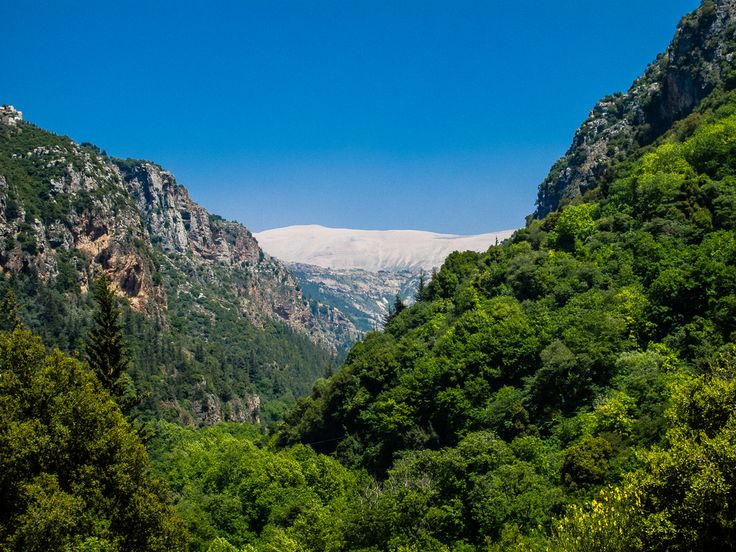
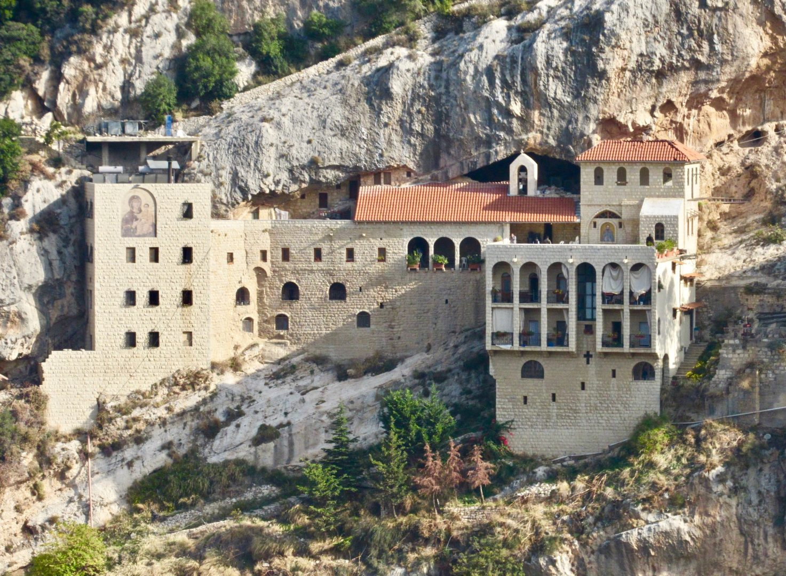

"Brief synthesis Ouadi Qadisha is one of the most important settlement sites of the first Christian monasteries in the world, and its monasteries, many of which of great age, are set in an extraordinarily rugged landscape. Nearby are the vestiges of the great cedar forest of Lebanon, highly prized in ancient times for the construction of great religious buildings." ~UNESCO
 